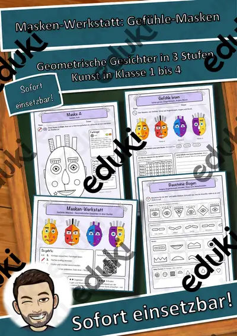
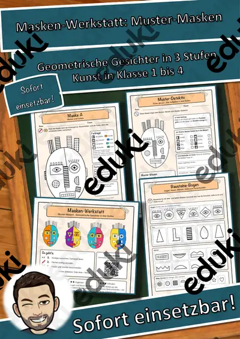
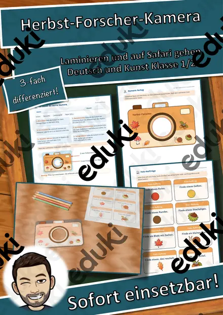
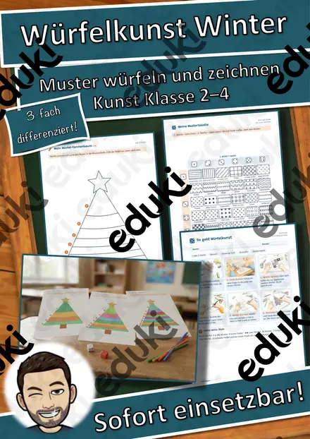
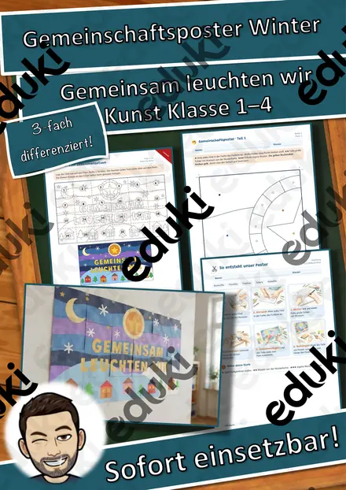

Masken-Werkstatt Formen-Gesichter – Geometrische Gesichter in 3 Stufen (Kunst, Klasse 1–4, Vorlagen + Bausteine)
Zehn bunte Masken auf dem Tisch – und jede sieht anders aus, obwohl alle Kinder mit derselben Vorlage angefangen haben. Die Masken-Werkstatt „Formen-Gesichter“ ist eine komplette Kunst-Werkstatt für die Grundschule (Klasse 1–4) und die Förderschule: Gesichter aus geometrischen Formen, geteilt in zwei Hälften, mit zwei verschiedenen Augen, Musterstreifen als Haaren und kräftigen Farben. Du brauchst nur Buntstifte oder Wachsmaler, Schere, Kleber und Tonpapier.
Ein Gesicht aus Kreis, Dreieck und Rechteck: Die Kinder lernen acht ebene Formen kennen, entdecken sie in einer Beispielmaske und bauen daraus ihr eigenes kubistisches Gesicht mit zwei verschiedenen Augen.
Dreifach differenziert – alle Kinder arbeiten am gleichen Thema:
- ★ Ausmalen: fertige Maskenvorlage, Farbregel folgen, ausschneiden, Streifen ankleben
- ★★ Ergänzen: Augen und Mund vom Bausteine-Bogen wählen, angefangene Muster fortsetzen, eigene Farbwahl begründen
- ★★★ Erfinden: eigene Maske aus Blanko-Umriss und Formen-Bank entwerfen – mit Skizze, Farbidee, Plan und Selbst-Check
Inhalt (17 Seiten + Deckblatt):
- Übersicht mit Anleitung in vier Schritten, Stufen-Erklärung und Kurz-Tipp für Lehrkräfte
- Bildwortschatz: der Kreis, das Dreieck, das Quadrat, das Rechteck, der Halbkreis, das Oval, die Raute, das Trapez – mit QR-Code zum Anhören und Nachsprechen (ideal für DaZ und Klasse 1)
- Formen-Detektiv (Farb-Auftrag, Formen ankreuzen, beschreiben), Formen-Werkstatt (nachspuren, Augen aus Formen bauen, Formen-Rätsel, Formen im Alltag)
- Schritt-für-Schritt-Anleitung mit Bildern und Materialliste
- 3 Masken-Vorlagen ★ mit Farbregel · 2 Masken-Vorlagen ★★ mit Lücken zum Ergänzen
- Bausteine-Bogen (Augen, Nasen, Münder und Deko-Formen) und Streifen-Bogen (Haar-Streifen, Zacken-Krone, Ohren) zum Ausschneiden
- Blanko-Umrisse mit Formen-Bank und Gestaltungsauftrag ★★★ mit Kriterien-Checkliste
- Kunstgespräch mit Satzanfängen, Partner-Feedback „2 Sterne, 1 Wunsch“, Formen-Bingo, Ich-kann-Check
- Lösungen, Bewertungsraster und Hinweise für Lehrkräfte (Ablauf für 2 Doppelstunden, Differenzierung, Einsatz-Ideen)Fächer: Kunst und Mathematik (ebene Figuren erkennen und benennen), Deutsch/DaZ (Fachwortschatz, beschreiben, begründen). Einsatz: Kunstunterricht, Projekttag, Fasching und Karneval, Theater, Schulfest-Galerie, Vertretungsstunde, Freiarbeit.
Teil der Reihe „Masken-Werkstatt: Geometrische Gesichter“ (3 Hefte: Formen-Gesichter, Muster-Masken, Gefühle-Masken) – im Paket günstiger.
Alle Masken, Formen und Symbole sind eigene Vektorgrafiken – keine Fotos, keine realen Personen, keine Marken. Audio per Sprachsynthese. Texte mit KI-Unterstützung erstellt und geprüft.
Viel Freude in der Masken-Werkstatt wünscht Snice! :)
Ähnliche Materialien

Masken-Werkstatt Materialpaket: 3 Hefte – Geometrische Gesichter in 3 Stufen (Kunst, Klasse 1–4, Vorlagen + Bausteine)

Masken-Werkstatt Gefühle-Masken – Geometrische Gesichter in 3 Stufen (Kunst, Klasse 1–4, Vorlagen + Bausteine)

Masken-Werkstatt Muster-Masken – Geometrische Gesichter in 3 Stufen (Kunst, Klasse 1–4, Vorlagen + Bausteine)

Herbst-Forscher-Kamera – Papier-Kamera zum Laminieren mit Foto-Aufträgen und Fotoalbum, 3-fach differenziert (Klasse 1/2)

Würfelkunst Winter – Tannenbaum-Muster erwürfeln und zeichnen, 3-fach differenziert (Klasse 2–4)

Gemeinschaftsposter Winter „Gemeinsam leuchten wir“ – Klassenposter aus 24 Teilen, 3-fach differenziert (Klasse 1–4)

Oster-Ausmalbilder, Ausmalbilder für Ostern - Klassenzimmergestaltung